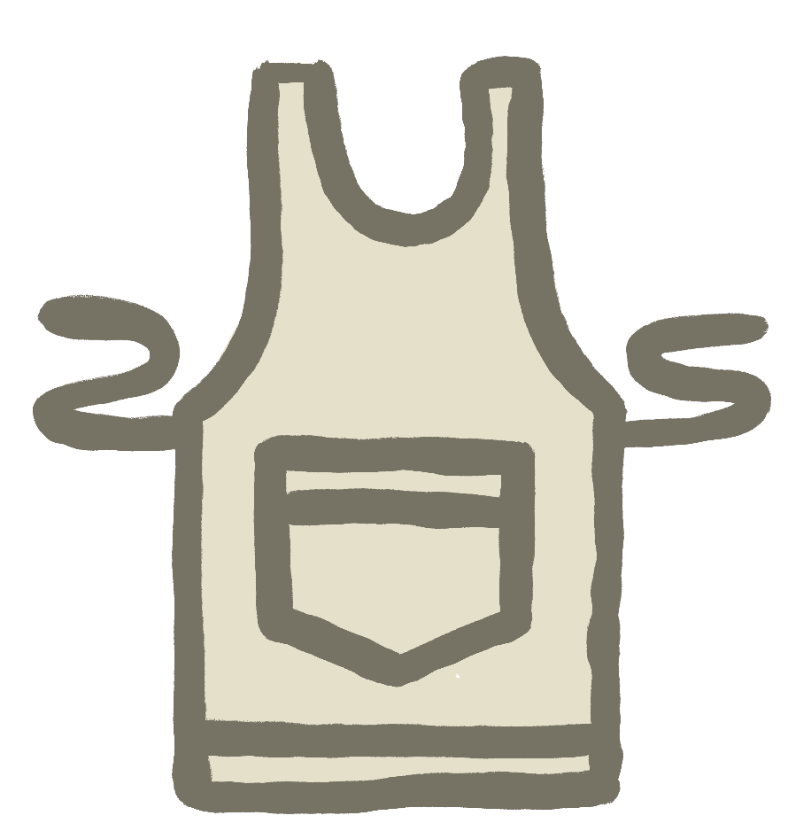
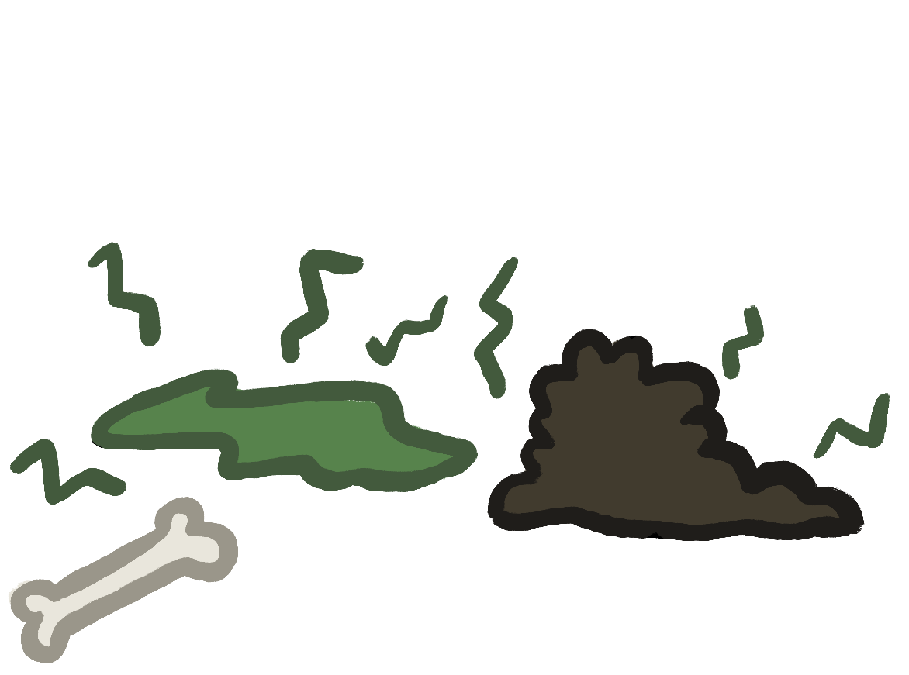
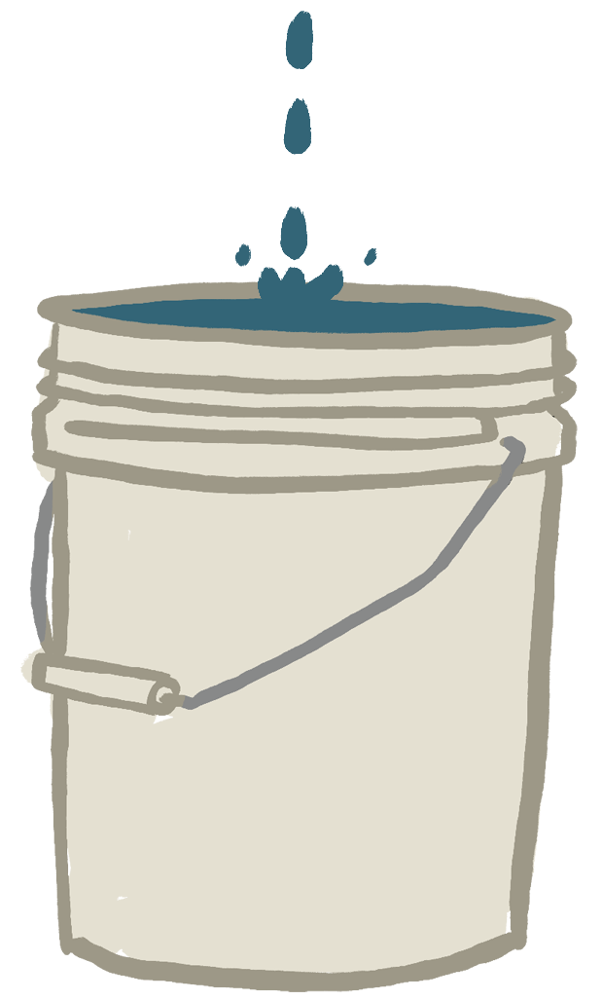
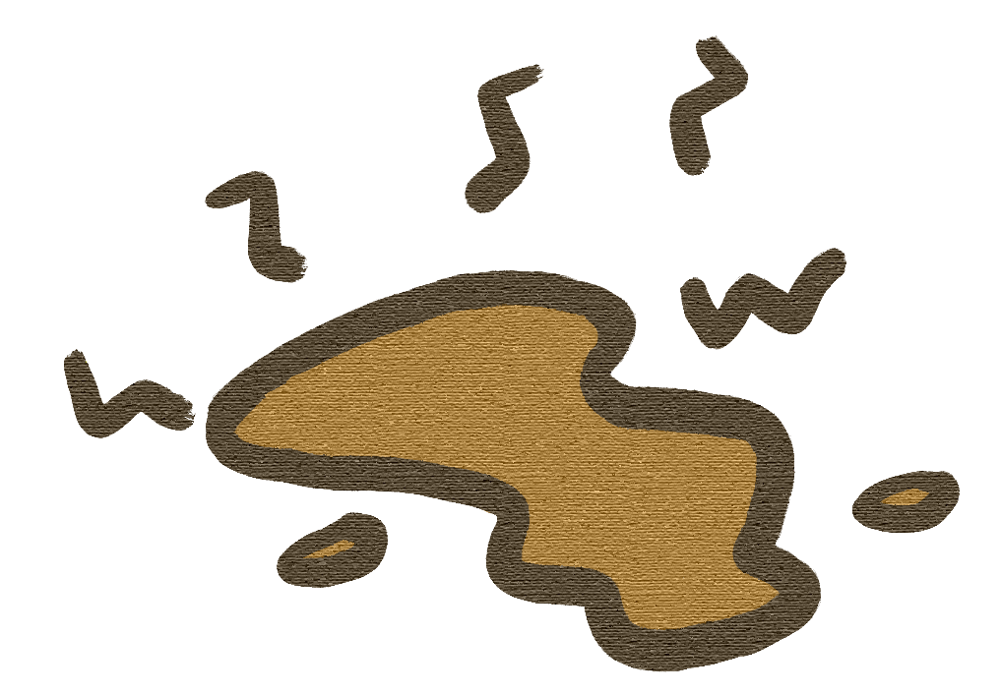

Thank heavens you’re here. We need your help to clean up this school! Find all the violations in this cafeteria and click on them to capture them. Good luck!
This is your Map. Use it to navigate around the different cafeteria areas.
This keeps track of the people you need to talk to. Click on workers to interact with them!

You Found A Health Code Violation!
Rats
Wild rats carry many diseases that can contaminate food. They are most often found in Manhattan and the Bronx. In Brooklyn, they are found in 9.60% of public schools, or 912 schools.
You Found A Health Code Violation!
Filth Flies
Filth flies carry diseases and can lay eggs in food, which hatch into maggots. They are most often found in Manhattan and Queens. In Brooklyn, they are found in 3.90% of public schools, or 371 schools.
You Found A Health Code Violation!
Facility not vermin proof
While not as bad as actual mice and rats, this is still an invitation for them. This problem is most often found in Manhattan and Queens. In Brooklyn, this is found in 12.60% of public schools, or 1195 schools.
You Found A Health Code Violation!
food not protected from contamination
Food left out in sub-optimal temperatures can be cause many illnesses. This is most often found in Manhattan and Brooklyn. In Brooklyn, it is found in 3.10% of public schools, or 297 schools.
You Found A Health Code Violation!
Light bulb not shielded or shatterproof
Light bulbs unprotected or improperly built can lead to burns or shattered glass. These are most often found in Staten Island and Manhattan. In Brooklyn, it is found in 3.70% of public schools, or 353 schools.
You Found A Health Code Violation!
Surface improperly constructed
Food left out on surfaces not constructed for food can become hazardous. This is most often found in Staten Island and the Bronx. In Brooklyn, it is found in 25.70% of public schools, or 2436 schools.

CHEF
What’s the big deal? So what I don’t have a certificate? Who cares? I got 800 kids to feed, MOVE!
You Found A Health Code Violation!
Food Protection Certificate not held by supervisor
These certificates are mandatory for serving food in NYC. They are most often missing in Queens and the Bronx. In Brooklyn, they are found in 2.40% of public schools, or 231 schools.
You Found A Health Code Violation!
Plumbing not properly installed
Poor water quality and hazardous material in water are the biggest threats posed by improper plumbing. It is seen most often in Staten Island and the Bronx. In Brooklyn, they are found in 10.60% of public schools, or 1008 schools.

You Found A Health Code Violation!
Food contact surface not properly washed
Surfaces that house food being dirty or unwashed can lead to cross contamination and widespread germs. It is seen most often in Brooklyn. In Brooklyn, this is found in 2.70% of public schools, or 254 schools.

You Found A Health Code Violation!
Pesticide use not in accordance to the law
Pesticides in food can cause potiential heath problems and can be toxic to humans. It is seen most often in Brooklyn. In Brooklyn, they are found in 2.30% of public schools, or 214 schools.